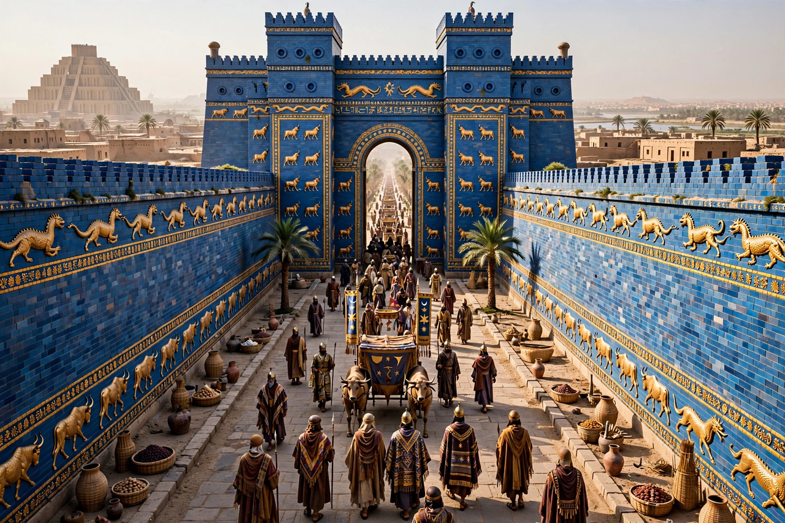

From Wikipedia, the free encyclopedia
| Babylon | |
|---|---|
 | |
| Location | Hillah, Babil Governorate, Iraq |
| Founded | By 1894 BC (First Babylonian dynasty) |
| Peak | Neo-Babylonian Empire, 626–539 BC |
| Key rulers | Hammurabi; Nebuchadnezzar II |
| UNESCO | World Heritage Site since 2019 |
Babylon (Akkadian: Bābili(m); "Gate of the Gods") was an ancient city located on the Euphrates river in south-central Mesopotamia, in present-day Iraq, about 85 kilometres south of Baghdad. It was the capital of the Babylonian empires and one of the great cities of the ancient world, renowned for its ziggurat (associated with the Tower of Babel), its walls, and the Ishtar Gate.
Babylon rose to prominence under its sixth king, Hammurabi (r. 1792–1750 BC), who united Mesopotamia and issued a famous law code. After centuries under Kassite, Assyrian, and other rule, the city reached its greatest splendour under the Neo-Babylonian (Chaldean) dynasty, especially Nebuchadnezzar II (r. 605–562 BC), who rebuilt the city, destroyed Jerusalem and exiled the Judeans (the Babylonian captivity), and is credited by tradition with the Hanging Gardens, one of the Seven Wonders of the Ancient World.
Cyrus the Great of Persia captured Babylon in 539 BC. The city remained important under the Persian, Macedonian, and Parthian empires — Alexander the Great died there in 323 BC — but gradually declined as nearby Seleucia and later Baghdad drew away population. By late antiquity it was largely in ruins.
German excavations under Robert Koldewey (1899–1917) uncovered the Ishtar Gate and Processional Way, whose glazed-brick reliefs were reconstructed in Berlin. Under Saddam Hussein, parts of the site were controversially rebuilt. The ruins were inscribed as a UNESCO World Heritage Site in 2019.
Categories: Babylon | Ancient cities | Archaeological sites in Iraq